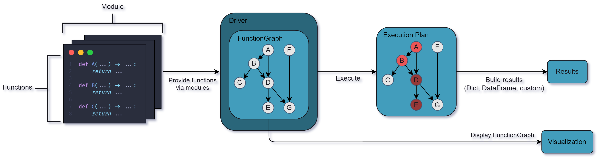

Welcome to Apache Hamilton¶

Apache Hamilton is a general-purpose framework to write dataflows using regular Python functions. At the core, each function defines a transformation and its parameters indicates its dependencies. Apache Hamilton automatically connects individual functions into a Directed Acyclic Graph (DAG) that can be executed, visualized, optimized, and reported on. Apache Hamilton also comes with a UI to visualize, catalog, and monitor your dataflows.
{kind=link}
The ABC of Apache Hamilton¶
Why should you use Apache Hamilton?¶
Facilitate collaboration. By focusing on functions, Apache Hamilton avoids sprawling code hierarchy and generates flat dataflows. Well-scoped functions make it easier to add features, complete code reviews, debug pipeline failures, and hand-off projects. Visualizations can be generated directly from your code to better understand and document it. Integration with the Apache Hamilton UI allows you to track lineage, catalog code & artifacts, and monitor your dataflows.
Reduce development time. Apache Hamilton dataflows are reusable across projects and context (e.g., pipeline vs. web service). The benefits of developing robust and well-tested solutions are multiplied by reusability. Off-the-shelf dataflows are available on the Apache Hamilton Hub.
Own your platform. Apache Hamilton helps you integrate the frameworks and tools of your stack. Apache Hamilton’s features are easy to extend and customize to your needs. This flexibility enables self-serve designs and ultimately reduces the risks of vendor lock-in.
Scale your dataflow. Apache Hamilton separates transformation logic from execution, allowing you to seamlessly scale via remote execution (AWS, Modal, etc.) and specialized computation engines (Spark, Ray, duckdb etc.). Apache Hamilton was battle tested under intensive enterprise data workloads.
Here’s a quick overview of benefits that Apache Hamilton provides as compared to other tools:
Feature |
Apache Hamilton |
Macro orchestration systems (e.g. Airflow) |
Feast |
dbt |
Dask |
|---|---|---|---|---|---|
Execute a graph of data transformations |
✅ |
✅ |
❌ |
✅ |
✅ |
Can visualize lineage easily |
✅ |
❌ |
❌ |
✅ |
✅ |
Can model GenerativeAI/LLM based workflows |
✅ |
❌ |
❌ |
❌ |
❌ |
Is a feature store |
❌ |
❌ |
✅ |
❌ |
❌ |
Helps you structure your code base |
✅ |
❌ |
❌ |
✅ |
❌ |
Is just a library |
✅ |
❌ |
❌ |
❌ |
✅ |
Runs anywhere python runs |
✅ |
❌ |
❌ |
❌ |
✅ |
Documentation friendly |
✅ |
❌ |
❌ |
❌ |
❌ |
Code is always unit testable |
✅ |
❌ |
❌ |
❌ |
❌ |
Architecture Overview¶
The following diagram gives a simplified overview of the main components of Apache Hamilton.

Functions & Module. Transformations are regular Python functions organized into modules. Functions must be type-annotated, but hold no dependency with Apache Hamilton and can be reused outside of it.
Driver & FunctionGraph. The Driver will automatically assemble the FunctionGraph from the modules given. The Driver can be configured to modify and extend the execution behavior (e.g., remote execution, monitoring, webhooks, caching).
Visualization. The FunctionGraph can be visualized without executing code. This coupling ensures visualizations always match the code from modules.
Execution. When requesting variables, the Driver establishes an execution plan to only compute the required functions. Then, results are gathered and returned to the user.
Who is using Apache Hamilton?¶
Multiple companies are doing cool stuff with Apache Hamilton! Come chat with members of the community and the development team on Slack:
Wealth.com - Async Python LLM document processing pipelines
Wren.ai - Async RAG pipelines
Oxehealth - Multi-modal prediction
PupPilot - Async python LLM transcript processing pipelines
Stitch Fix — Time series forecasting
British cycling — Telemetry analysis
Joby - Flight data processing
Transfix - Online featurization and prediction
IBM - Internal search and ML pipelines
Ascena - Feature engineering
Adobe - Prompt engineering research
Axiom Cloud - IoT data processing
Oak Ridge & PNNL - Naturf project
Habitat - Time-series feature engineering
UK Government Digital Service - National feedback pipeline (processing & analysis)
Railoify - Orchestrate pandas code
Lexis Nexis - Feature processing and lineage
Opendoor - Manage PySpark pipelines
KI - Feature engineering
Kora Money - DS/ML Workflows
Capitec Bank - Financial decisions
Best Egg - Feature engineering
RTV Euro AGD - General feature engineering & machine learning
Testimonials¶
"Apache Hamilton provides a modular and compatible framework that has significantly empowered our data science team. We've been able to build robust and flexible data pipelines with ease. The documentation is thorough and regularly updated... Even with no prior experience with the package, our team successfully migrated one of our legacy data pipelines to the Apache Hamilton structure within a month. This transition has greatly enhanced our productivity, enabling us to focus more on feature engineering and model iteration while Apache Hamilton's DAG approach seamlessly manages data lineage.
I highly recommend Apache Hamilton to data professionals looking for a reliable, standardized solution for creating and managing data pipelines."
Yuan Liu
DS, Kora Financial"How (with good software practices) do you orchestrate a system of asynchronous LLM calls, but where some of them depend on others? How do you build such a system so that it’s modular and testable? At wealth.com we've selected Apache Hamilton to help us solve these problems and others. And today our product, Ester AI, an AI legal assistant that extracts information from estate planning documents, is running in production with Apache Hamilton under the hood."
Kyle Pounder
CTO, Wealth.com"Apache Hamilton is simplicity. Its declarative approach to defining pipelines (as well as the UI to visualize them) makes testing and modifying the code easy, and onboarding is quick and painless. Since using Apache Hamilton, we have improved our efficiency of both developing new functionality and onboarding new developers to work on the code. We deliver solutions more quickly than before."
Michał Siedlaczek
Senior DS/SWE, IBM"...The companion Apache Hamilton UI has taken the value proposition up enormously with the ability to clearly show lineage & track execution times, covering a major part of our observability needs"
Fran Boon
Director, Oxehealth.com"Many thanks to writing such a great library. We are very excited about it and very pleased with so many decisions you've made. 🙏"